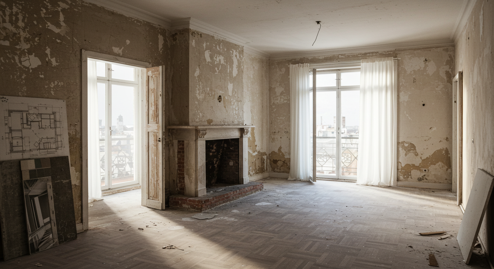
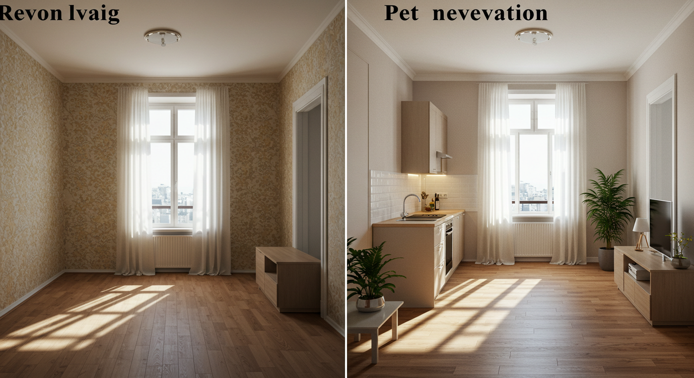
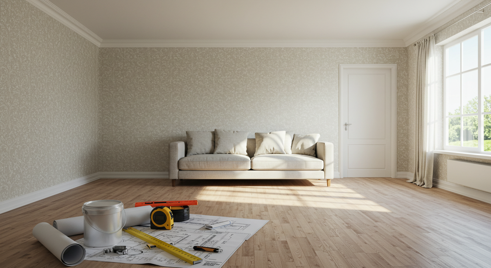
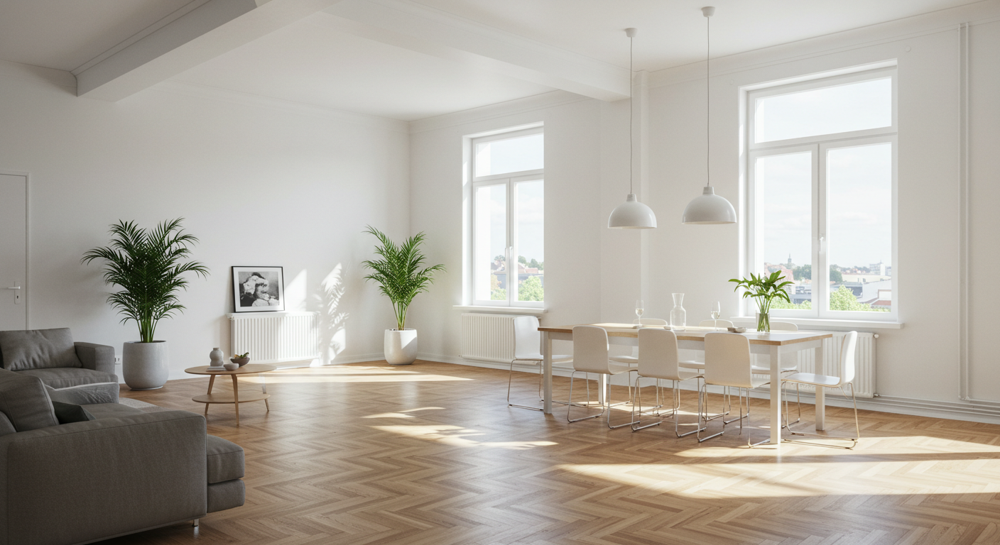
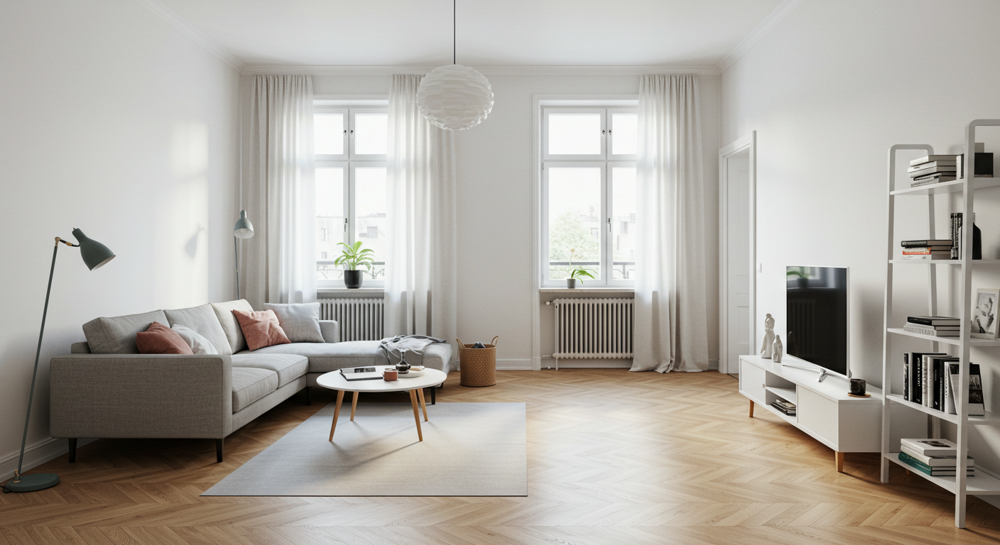
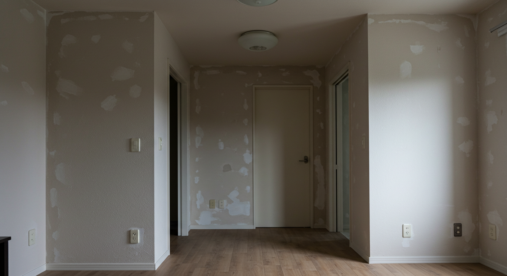
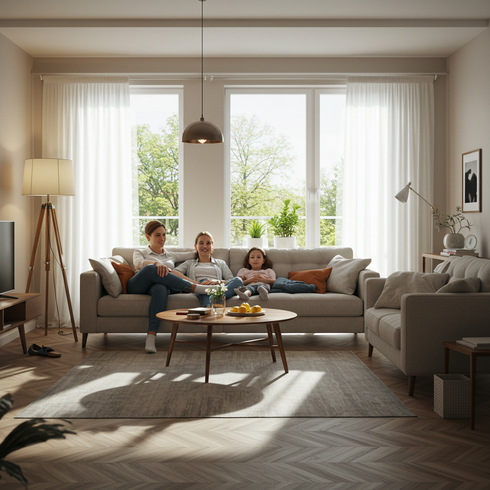
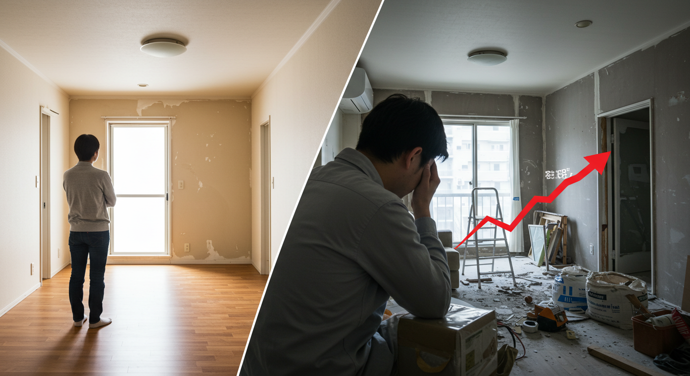
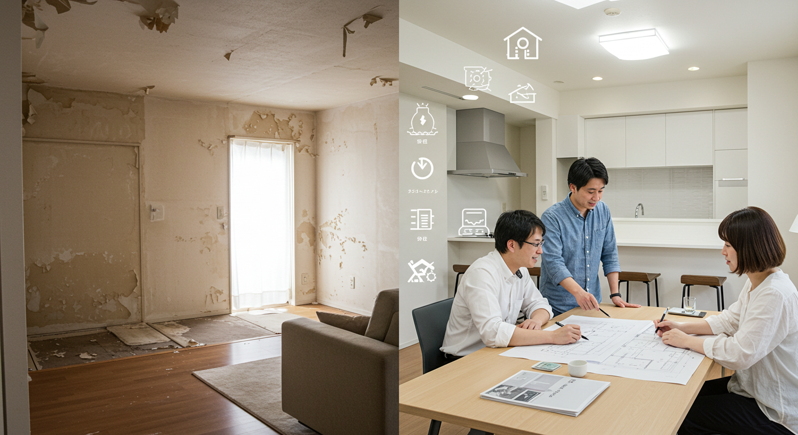
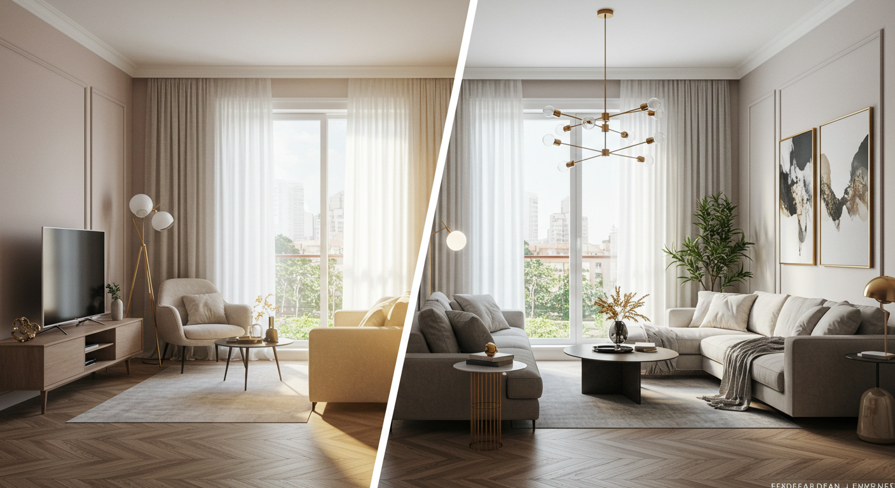

中古マンション購入者必見！リフォームとリノベーションの違いと賢い選択術

念願の中古マンション購入、本当におめでとうございます。たくさんの物件の中から、ようやく「ここだ！」と思える場所を見つけ、新しい生活への期待に胸を膨らませていらっしゃるのではないでしょうか。立地や広さ、日当たりといった基本的な条件をクリアしたそのお部屋を、これからさらに自分たちの暮らしにぴったりと合う、理想の空間へと変えていく。それは、中古マンション購入における最大の楽しみの一つと言えるかもしれません。
しかし、いざ「住まいを自分らしく変えたい」と考え始めたとき、多くの方が「リフォーム」と「リノベーション」という二つの言葉に出会うことになります。テレビの番組や雑誌の特集、インターネットの記事などで何気なく目にしているこれらの言葉ですが、その違いを明確に説明できる方は意外と少ないかもしれません。「なんとなく、リノベーションの方が大掛かりな工事なのかな？」といった漠然としたイメージはお持ちでも、具体的に何がどう違うのか、そして自分たちの希望を叶えるためにはどちらを選べば良いのか、迷ってしまうことも多いでしょう。
この二つの言葉は、似ているようでいて、その目的や工事の規模、費用、そして完成後の住まいの姿まで、実は大きく異なります。この違いを正しく理解しないまま計画を進めてしまうと、「本当はもっと自由に間取りを変えたかったのに、リフォームではできなかった」「そこまで大掛かりな工事は必要なかったのに、リノベーションで費用がかさみすぎてしまった」といった、後悔に繋がりかねません。
せっかく手に入れた大切な我が家です。後悔のない、心から満足できる住まいづくりを実現していただきたい。その想いから、この記事では、中古マンション購入をされた皆様が賢い選択をするために、以下の点を詳しく、そして分かりやすく解説していきます。
- リフォームとリノベーションの具体的な違い
- それぞれの基本的な情報（工事内容、費用、期間など）
- メリットとデメリットの徹底比較
- 自分に合った選択をするための重要なポイント
- 理想の住まいが完成するまでの具体的な流れ
この記事を最後までお読みいただければ、リフォームとリノベーションの違いが明確になり、ご自身の希望や予算、ライフプランに最適なのはどちらなのか、自信を持って判断できるようになるはずです。専門的な内容も含まれますが、できる限り専門用語を避け、皆様の目線に立って、優しく丁寧にご説明しますので、どうぞリラックスしてお付き合いください。
さあ、あなたとご家族にとって最高の住まいを創り上げるための、第一歩を踏み出しましょう。
リフォームとリノベーションの具体的な違い

まずはじめに、この二つの言葉の核心的な違いを、4つの視点から整理してみましょう。この違いを最初に理解しておくことで、今後の情報がスムーズに頭に入ってくるはずです。
違い１．目的・コンセプトの違い
リフォームとリノベーションの最も根本的な違いは、その「目的」にあります。工事を行うことで何を目指すのか、そのゴールが全く異なるのです。
リフォームの目的は「原状回復」と「修繕」
リフォーム（Reform）という言葉は、「re-（再び）」と「form（形作る）」を組み合わせたもので、日本語に訳すと「改良」や「改善」といった意味になります。住まいの文脈で使われる場合、その主な目的は「老朽化した部分や壊れた箇所を修繕し、新築に近い状態に戻すこと」です。
イメージとしては、「マイナスをゼロに戻す」作業と考えると分かりやすいでしょう。例えば、長年使って古くなったキッチンを、新しいシステムキッチンに交換する。汚れてしまった壁紙を、新しいものに張り替える。壊れてしまった給湯器を取り替える。これらはすべてリフォームに分類されます。あくまでも既存の状態を基準として、それを元に戻したり、新しくしたりすることが中心となります。住まいの機能や性能を「回復」させることが、リフォームのコンセプトなのです。
リノベーションの目的は「刷新」と「価値向上」
一方、リノベーション（Renovation）は「re-（再び）」と「innovation（革新）」を組み合わせた言葉で、「既存の建物に大規模な改修を加え、新たな機能や価値を付け加えること」を目的とします。
こちらは、「ゼロをプラスにする、あるいは新たな価値を創造する」作業と言えます。単に古くなったものを新しくするだけでなく、住む人のライフスタイルや価値観に合わせて、住まいを根本からつくり変えることを目指します。例えば、壁を取り払って狭かった複数の部屋を一つの広々としたリビングダイニングにする。使っていなかった和室を、趣味を楽しむための書斎や、大容量のウォークインクローゼットに変える。内装をすべて解体し、無垢材のフローリングや漆喰の壁など、こだわりの自然素材で仕上げる。これらはリノベーションの典型的な例です。住まいの価値を新築時以上に「向上」させることが、リノベーションのコンセプトなのです。
違い２．工事範囲・規模の違い
目的が異なれば、当然ながら工事の範囲や規模も大きく変わってきます。
リフォームは「部分的・表層的」な工事が中心
リフォームは「原状回復」が目的のため、工事は必要な箇所に限定されることがほとんどです。キッチンだけ、お風呂だけ、壁紙だけ、といったように、部分的な工事が中心となります。また、建物の構造躯体（骨組み）には手を加えず、内装や設備の交換といった表層的な改修が主になります。そのため、工事の規模は比較的小さく、住みながら工事を進められるケースも少なくありません。
リノベーションは「全体的・抜本的」な工事が中心
リノベーションは「価値向上」を目指すため、工事は住まい全体に及ぶことが多くなります。間取りを自由に変更するために、壁の撤去や新設を行ったり、キッチンやお風呂の位置を移動させたりすることも可能です。時には、床・壁・天井の内装をすべて取り払い、建物の骨組みだけの状態（これをスケルトンと言います）にしてから、一から空間をつくり直す「フルリノベーション」を行うこともあります。電気の配線や水道の配管といった、目に見えないインフラ部分まで刷新することも珍しくありません。このように、工事は全体的かつ抜本的になるため、規模は非常に大きくなります。
ただし、マンションの場合は注意が必要です。建物の構造を支える壁（構造壁）や柱、梁などは、個人の意思で撤去したり動かしたりすることはできません。これらはマンション全体の安全に関わる「共用部分」だからです。リノベーションで間取りを変更する際は、どこまでが個人の所有物である「専有部分」で、どこからが「共用部分」なのかを正確に把握した上で、可能な範囲で計画を進める必要があります。
違い３．費用・工期の違い
工事の規模が違えば、当然、それにかかる費用と時間も大きく異なります。
リフォームは「比較的安価・短期間」
部分的な工事が中心のリフォームは、費用を抑えやすいのが特徴です。工事内容にもよりますが、数十万円から数百万円程度が一般的な価格帯です。工期も比較的短く、数日で終わる簡単な工事から、水回り全体を交換するような場合でも数週間程度で完了することがほとんどです。
- 費用目安: 数十万円～300万円程度
- 工期目安: 数日～3週間程度
リノベーションは「高額・長期間」
住まい全体に手を入れるリノベーションは、工事の範囲が広いため、費用は高額になる傾向があります。解体費用や廃材の処分費用、設計デザイン料なども必要となり、総額は数百万円から、こだわりによっては1,000万円を超えることも珍しくありません。また、工事そのものに数ヶ月を要するだけでなく、その前の設計プランニングにも数ヶ月の期間が必要です。そのため、検討を開始してから完成・入居まで、半年から1年近くかかることも覚悟しておく必要があります。
- 費用目安: 500万円～1,500万円以上
- 工期目安: 3ヶ月～6ヶ月以上（設計期間は別途）
違い４．資産価値への影響
最後に、将来的な住まいの資産価値に与える影響も、両者では異なってきます。
リフォームは「価値の維持」
リフォームは、経年劣化した部分を修繕し、住まいの機能を回復させることが目的です。これにより、建物の価値が極端に下がるのを防ぎ、いわば「資産価値を維持する」効果が期待できます。しかし、元々の間取りや設計思想は変わらないため、新たな付加価値を生み出し、積極的に資産価値を高めるという側面は弱いと言えるでしょう。
リノベーションは「価値の向上」
リノベーションは、現代のライフスタイルに合わせた間取りや、デザイン性の高い内装、断熱性や省エネ性能の向上など、住まいに新たな魅力を加えることを目指します。これにより、中古マンションでありながら、新築マンションにも引けを取らない、あるいはそれ以上の魅力を持つ住まいへと生まれ変わらせることが可能です。その結果、将来的に売却する際に、周辺の類似物件よりも高く評価されるなど、「資産価値を向上させる」ポテンシャルを秘めています。
ただし、あまりに個性的すぎるデザインや奇抜な間取りは、買い手を選ぶ要因となり、逆に資産価値を下げてしまう可能性もゼロではありません。将来的な売却も視野に入れる場合は、多くの人に受け入れられやすい普遍的なデザインや機能性を取り入れるといったバランス感覚も重要になります。
リフォームの基本情報

リフォームとリノベーションの全体的な違いを把握したところで、ここからはまず「リフォーム」について、その定義や具体的な工事内容、費用感をさらに詳しく見ていきましょう。
基本１．リフォームの定義と特徴
前述の通り、リフォームの定義は「老朽化した建物を、新築当初の状態に近づけるための修繕・改修工事」です。英語の「Reform」には「改善する」という意味がありますが、日本の住宅業界では主に「原状回復」の意味合いで使われています。
その最大の特徴は、「暮らしの中の不便や不満を、ピンポイントで解消できる手軽さ」にあると言えるでしょう。
例えば、「キッチンのコンロが古くて火力が弱い」「お風呂に追い焚き機能がなくて不便」「壁紙が汚れて部屋が暗く見える」といった、日々の暮らしの中で感じる具体的な「困った」を解決するのに非常に適しています。
大掛かりな間取り変更などは行わないため、建物の基本的な構造はそのままです。そのため、計画から完成までのプロセスが比較的シンプルで、スピーディーに進められるのが魅力です。また、工事内容によっては、住みながらの施工も可能です。例えば、日中にリビングの壁紙を張り替えてもらい、夜は寝室で休む、といった対応ができる場合もあり、仮住まいを探す手間や費用がかからないケースが多いのも嬉しいポイントです。
まとめると、リフォームは「今の住まいの骨格は気に入っているけれど、部分的に古くなったり使いにくくなったりした箇所を、手軽に新しくしたい」というニーズに応えるための選択肢なのです。
基本２．具体的な工事内容例
では、具体的にどのような工事がリフォームに分類されるのでしょうか。代表的な例を場所別にご紹介します。
【水回りのリフォーム】
住まいの中でも特に劣化が進みやすく、リフォームの要望が最も多いのが水回りです。
- キッチン: 古いブロックキッチンをシステムキッチンに交換する、食洗機をビルトインタイプにする、古くなったレンジフードを交換する、など。
- 浴室: 在来工法の浴室をユニットバスに交換する、追い焚き機能や浴室乾燥機付きの給湯器に交換する、手すりを設置する、など。
- トイレ: 和式トイレを洋式トイレに交換する、古くなった便器を節水タイプの最新モデルに交換する、温水洗浄便座を取り付ける、壁紙や床材を張り替える、など。
- 洗面所: 洗面化粧台を新しいものに交換する、収納付きの三面鏡にする、など。
【内装のリフォーム】
お部屋の印象を大きく変え、気分を一新できるのが内装のリフォームです。
- 壁・天井: ビニールクロスの張り替え、塗装の塗り替え、漆喰や珪藻土などへの塗り替え。
- 床: フローリングの張り替え、カーペットからフローリングへの変更、畳の表替えや新調、クッションフロアの張り替え。
- 建具: 室内ドアの交換、襖や障子の張り替え、収納扉（クローゼットなど）の交換。
【その他】
上記以外にも、以下のような部分的な工事がリフォームに含まれます。
- 給湯器の交換: 経年劣化したガス給湯器や電気温水器を新しいものに交換する。
- 窓・サッシの交換: 断熱性や防音性を高めるために、内窓（二重窓）を設置する。
- 収納の増設: 壁面に作り付けの棚やクローゼットを設置する。
- バリアフリー化: 廊下や玄関に手すりを設置する、室内の段差を解消するスロープを設ける。
これらの工事は、単独で行うこともできますし、「キッチンとリビングの壁紙をまとめて新しくする」というように、複数の工事を組み合わせて行うことも可能です。
基本３．費用相場と期間
リフォームを検討する上で最も気になるのが、費用と期間でしょう。ここでは、代表的な工事内容ごとの目安をご紹介します。ただし、これらの金額はあくまで一般的な相場であり、使用する設備のグレードや材料、工事の範囲、依頼する会社によって変動しますので、参考としてご覧ください。
- トイレの交換
- 費用相場: 15万円 ～ 40万円
- 期間: 半日 ～ 2日
- 内容: 便器本体の交換が中心。内装（壁・床）の張り替えも同時に行う場合は費用と期間が加算されます。
- 洗面化粧台の交換
- 費用相場: 15万円 ～ 35万円
- 期間: 半日 ～ 1日
- 内容: 既存の洗面台を撤去し、新しいものを設置します。
- システムキッチンの交換
- 費用相場: 70万円 ～ 200万円
- 期間: 3日 ～ 7日
- 内容: キッチンのサイズやグレード、オプション（食洗機、浄水器など）によって価格が大きく変わります。壁付けキッチンから対面キッチンへの変更など、位置の移動を伴う場合はリノベーションの領域となり、費用はさらに高くなります。
- ユニットバスの交換
- 費用相場: 80万円 ～ 150万円
- 期間: 3日 ～ 5日
- 内容: 既存のユニットバスを解体し、新しいものを組み立てます。在来工法の浴室からの変更の場合は、解体や基礎工事に費用と時間がかかることがあります。
- 壁紙（クロス）の張り替え
- 費用相場: 5万円 ～ 10万円（6畳の部屋の場合）
- 期間: 1日 ～ 2日
- 内容: 選ぶクロスの種類（量産品か機能性壁紙かなど）によって単価が変わります。
- フローリングの張り替え
- 費用相場: 10万円 ～ 25万円（6畳の部屋の場合）
- 期間: 2日 ～ 4日
- 内容: 既存の床の上に新しい床材を重ねて張る「重ね張り（カバー工法）」と、既存の床を剥がして新しく張る「張り替え」があり、後者の方が費用と工期がかかります。
これらの工事を複数同時に行うことで、工事費や諸経費をまとめられ、トータルコストを抑えられる場合もあります。リフォーム会社と相談しながら、効率的な計画を立てることが大切です。
リノベーションの基本情報

次に、「リノベーション」について、その魅力と詳細を掘り下げていきましょう。リフォームとは全く異なるアプローチで、住まいづくりを考えていきます。
基本１．リノベーションの定義と特徴
リノベーションの定義は、前述の通り「既存の建物に対して、機能や価値を再生させるための大規模な改修を行い、現代のライフスタイルに合わせて住まいを刷新し、価値を向上させること」です。
その最大の特徴は、「まるで注文住宅のように、ゼロから自分たちの理想の空間を創造できる自由度の高さ」にあります。
中古マンションは、あくまで「過去の誰かのライフスタイル」に合わせて作られた間取りです。しかし、リノベーションを行うことで、その制約から解き放たれ、現在の、そして未来の自分たちの暮らしに最適化された、世界に一つだけの住まいを手に入れることができます。
例えば、「夫婦二人とも在宅ワークなので、それぞれの集中できるワークスペースが欲しい」「子供が走り回れるように、廊下をなくして広々としたLDKをつくりたい」「映画鑑賞が趣味なので、リビングにプロジェクターとスクリーンを設置できる壁が欲しい」といった、個々の具体的な夢や希望を、間取りレベルから実現できるのがリノベーションの醍醐味です。
また、デザイン面だけでなく、住まいの性能を根本から向上させられる点も大きな特徴です。壁や床を一度解体するため、その内部に断熱材を追加して夏は涼しく冬は暖かい快適な室温環境を整えたり、窓を二重サッシに交換して結露や騒音の問題を解決したりと、目に見えない部分の性能（住宅性能）を高めることができます。これにより、日々の暮らしの快適性が向上するだけでなく、光熱費の削減にも繋がります。
まとめると、リノベーションは「既存の枠にとらわれず、自分たちの理想の暮らしを、デザインと性能の両面から追求したい」というニーズに応えるための、究極の住まいづくりの選択肢なのです。
基本２．具体的な工事内容例
リノベーションの工事は多岐にわたりますが、代表的なものをいくつかご紹介します。これらの工事を組み合わせることで、住まいは劇的に生まれ変わります。
【間取りの変更】
リノベーションの代名詞とも言える工事です。
- 壁の撤去・新設: 複数の部屋を繋げて一つの大きな空間にする（例: 3LDK→広々とした1LDK）、逆に大きな部屋を仕切って個室を増やす（例: 1LDK→2LDK）。
- 回遊動線の確保: 行き止まりをなくし、室内をぐるりと歩き回れるような動線をつくることで、家事の効率化や開放感の向上を図る。
- オープンキッチンの導入: 壁付けだったキッチンをリビング・ダイニングと一体の対面式やアイランド型に変更し、家族とのコミュニケーションが取りやすい空間にする。
【内装デザインの一新】
表層的な張り替えにとどまらず、素材からこだわることができます。
- スケルトンからの再構築: 床・壁・天井の内装材をすべて撤去し、コンクリートの躯体がむき出しの状態（スケルトン）から、全く新しい内装をつくり上げる。
- 素材へのこだわり: フローリングを無垢材にする、壁を漆喰や珪藻土の塗り壁にする、天井をコンクリート打ちっ放しにして現しにするなど、デザイン性と質感を追求する。
- 造作家具の設置: 空間に合わせて設計されたオーダーメイドの棚やデスク、収納などをつくり付け、統一感のあるインテリアを実現する。
【インフラ（設備配管・配線）の刷新】
目に見えない部分ですが、快適で安全な暮らしを支える重要な工事です。
- 給排水管の更新: 築年数の古いマンションでは、専有部分内の給排水管を新しいものに交換することで、水漏れなどのリスクを低減する。
- 電気配線の引き直し: コンセントやスイッチの位置を自由に変更したり、数を増やしたりする。照明計画に合わせて、ダウンライトや間接照明の配線も行う。
- ガス管の移動: キッチンの位置変更に伴い、ガス管を移動・延長する。
【住宅性能の向上】
日々の快適性と省エネに直結する工事です。
- 断熱工事: 壁の内側や床下、天井裏に断熱材を充填・追加し、外気の影響を受けにくい魔法瓶のような空間をつくる。
- 窓の交換・追加: 断熱性の高い複層ガラスのサッシに交換したり、内窓を設置したりする。
- 換気システムの導入: 24時間換気システムを導入し、常に新鮮な空気が流れる健康的な室内環境を保つ。
基本３．費用相場と期間
自由度が高い分、リノベーションの費用と期間はケースバイケースで大きく異なります。ここでは、一般的な目安と考え方について解説します。
【費用相場】
リノベーション費用は、工事範囲や内容によって大きく変動するため、「〇〇の工事でいくら」という定額を示すのが難しく、「1平方メートル（㎡）あたりいくら」という単価で語られることが一般的です。
- 費用相場: 10万円 ～ 20万円 / ㎡
- 例: 70㎡のマンションの場合、700万円 ～ 1,400万円 が一つの目安となります。
この費用には、解体費、仮設費、内装工事費、設備工事費、現場管理費などが含まれます。これに加えて、設計デザイン料（総工費の10%～15%程度）や、消費税が別途必要になるのが一般的です。
もちろん、これはあくまで目安です。内装をすべて解体するフルリノベーションなのか、間取りは変えずに内装と設備を一新するレベルなのかといった工事範囲や、使用する建材や設備のグレードによって、費用は大きく上下します。無垢材や輸入タイル、海外製の高級キッチンなどを採用すれば費用は上がりますし、シンプルな内装でコストを抑えることも可能です。
【期間】
リノベーションは、実際の工事期間だけでなく、その前のプランニング（設計）期間も非常に重要であり、相応の時間を要します。
- 相談・プランニング期間: 2ヶ月 ～ 4ヶ月
- リノベーション会社への相談、ヒアリング、現地調査、基本プランの作成、詳細設計、仕様決定、見積もり調整、契約など。
- 工事期間: 3ヶ月 ～ 6ヶ月
- 解体工事、躯体工事、配管・配線工事、下地工事、内装仕上げ工事、設備設置工事など。
つまり、リノベーションを考え始めてから、実際に新しい住まいに入居するまで、トータルで半年から1年近くかかることも珍しくありません。中古マンションの購入と同時にリノベーションを計画する場合は、物件の引き渡し時期や住宅ローンの実行タイミング、現在の住まいの退去時期などを考慮した、周到なスケジュール管理が不可欠となります。
リフォームのメリット

ここまでリフォームの基本情報を見てきましたが、その特徴をメリットとして整理してみましょう。リフォームが持つ強みは、主に「費用」「期間」「手軽さ」の3点に集約されます。
メリット１．費用を抑えられる
リフォーム最大のメリットは、何と言っても費用を比較的安価に抑えられることでしょう。
前述の通り、リノベーションが数百万円から1,000万円を超える規模になるのに対し、リフォームは数十万円から対応可能です。例えば、「中古マンションを購入したけれど、自己資金にあまり余裕がない。まずは最低限、水回りだけを新しくして住み始めたい」といった場合に、リフォームは非常に有効な選択肢となります。
工事範囲を必要な箇所に限定できるため、予算に応じて「今回はキッチンだけ」「来年は壁紙を」というように、段階的に手を入れていくことも可能です。一度に大きな出費をする必要がないため、家計への負担をコントロールしやすいという利点があります。
また、住宅ローンとは別に工事費用を準備する場合、金融機関が提供する「リフォームローン」を利用することになります。リフォームローンは、住宅ローンに比べて金利がやや高めですが、担保が不要で審査がスピーディーな商品が多く、手軽に利用しやすいという側面もあります。必要な金額だけを借り入れ、計画的に返済していくことができるのも、コスト管理のしやすさに繋がります。新築マンションの購入や、物件購入費＋リノベーション費用という大きな投資に比べ、初期費用をぐっと抑えて住まいをきれいにできる点は、大きな魅力です。
メリット２．工期が短い
費用と並ぶ大きなメリットが、工期が短いことです。
リノベーションがプランニングから完成まで半年以上かかるのに対し、リフォームは数日から数週間で完了します。これは、新しい生活を一日でも早くスタートさせたい方にとって、非常に重要なポイントです。
例えば、中古マンションの引き渡しを受けてから入居するまでの期間が限られている場合、長期間の工事は現実的ではありません。リフォームであれば、引き渡し後、引っ越しまでの短い期間に気になる箇所をさっときれいにし、スムーズに新生活を始めることができます。
また、工期が短いということは、工事中の生活への影響が少ないことも意味します。特に、住みながらの工事が可能なケースが多いのは、リフォームならではの利点です。もちろん、工事中は音や埃、職人さんの出入りなどがありますが、工事範囲が限定されているため、影響を受けるのは家の一部です。キッチンリフォームの間は外食やデリバリーを利用する、リビングの壁紙張り替え中は寝室で過ごす、といった工夫で乗り切ることができます。後述するリノベーションのように、仮住まいを探して二重に家賃を払ったり、大掛かりな引っ越しを二度も行ったりする必要がないため、金銭的な負担だけでなく、精神的・肉体的な負担も大幅に軽減できるのです。
メリット３．部分的な改修が可能
「全体的に不満はないけれど、ここだけが気になる」というニーズに、柔軟に応えられるのもリフォームの強みです。必要な部分だけをピンポイントで改修できる手軽さは、多くの人にとって魅力的に映るでしょう。
例えば、購入した中古マンションの内装は全体的にきれいだけれど、前の住人が使っていたトイレだけは新しいものに交換したい、というケースはよくあります。このような場合、トイレ交換だけを数時間から1日程度で行うリフォームが最適です。
また、「子供が独立して夫婦二人暮らしになったので、使わなくなった子供部屋の壁紙を落ち着いたデザインに張り替えたい」「ペットがつけた床の傷が気になるので、リビングのフローリングだけを新しくしたい」といった、ライフステージの変化や日々の暮らしの中で生じた小さな不満に、気軽に対応できます。
このように、大掛かりな計画を立てる必要がなく、気になったタイミングで、必要な箇所だけを手軽に、そしてスピーディーに改善できるフットワークの軽さ。これが、リフォームが持つ大きなメリットの一つなのです。住まいを「メンテナンス」しながら、長く快適に暮らしていくという考え方に、リフォームは非常によくマッチしています。
リフォームのデメリット

多くのメリットがある一方で、リフォームにはその手軽さゆえの限界も存在します。ここでは、リフォームを選択する際に理解しておくべきデメリットについて見ていきましょう。
デメリット１．デザインの自由度が低い
リフォームは既存の間取りや構造を前提とした部分的な改修が中心となるため、デザインや内装の自由度はリノベーションに比べて格段に低くなります。
例えば、壁紙や床材を新しくすることで部屋の雰囲気は一新できますが、それはあくまで「表層的な変化」に留まります。既存の部屋の形や広さ、窓の位置、天井の高さなどはそのままなので、根本的な空間デザインの変更はできません。
「もっと開放的なリビングにしたい」「キッチンをリビングの中心に置きたい」「海外のホテルのような洗練された空間にしたい」といった、大胆なデザインコンセプトを実現したい場合、リフォームの範囲では対応が難しく、物足りなさを感じてしまう可能性が高いでしょう。
また、部分的に改修を行うことで、新しくした部分と既存の部分との間に、デザインや質感のギャップが生まれてしまうこともあります。例えば、リビングの床だけを真新しいフローリングに張り替えた結果、隣接する廊下の古い床との境目が目立ってしまい、ちぐはぐな印象になってしまう、といったケースです。住まい全体で統一感のあるデザインを追求したい場合には、リフォームでは限界があることを認識しておく必要があります。
デメリット２．間取り変更に制限がある
デザインの自由度と関連しますが、間取りの変更には大きな制限があるという点も、リフォームの明確なデメリットです。
リフォームは、基本的に壁の撤去や新設といった、間取りに手を入れる工事は想定していません。そのため、「和室をなくしてリビングを広げたい」「子供部屋を二つに分けたい」といった、家族構成やライフスタイルの変化に合わせた柔軟な間取りの変更は、リフォームの範疇を超えることがほとんどです。
もちろん、簡単な間仕切り壁を設置する程度のことであればリフォームとして対応可能な場合もありますが、建物の構造に関わる壁を動かすような工事はできません。特にマンションの場合、コンクリートでできた構造壁（耐力壁）は、マンション全体の強度を支える重要な部分（共用部分）であるため、絶対に撤去することは許されません。
「今の間取りに大きな不満はない」という方であれば問題ありませんが、「この壁がなければもっと使いやすいのに…」といった根本的な間取りへの不満を抱えている場合、リフォームではその問題を解決することはできず、中途半端な満足度で終わってしまう可能性があります。
デメリット３．抜本的な改善が難しい
リフォームは目に見える部分を新しくすることが中心であり、建物の構造内部に隠れた問題の抜本的な改善は難しいという側面があります。
例えば、築年数の古いマンションでは、壁の内部にある断熱材が不足していたり、床下の給排水管が老朽化していたりすることがあります。これらは、夏場の暑さや冬場の底冷え、結露、あるいは将来的な水漏れリスクといった、暮らしの快適性や安全性に直結する重要な問題です。
しかし、リフォームのように壁や床の表面だけを改修する工事では、これらの根本原因にアプローチすることはできません。一時的に見た目はきれいになっても、断熱性能が低いままで光熱費がかさんだり、見えないところで配管の劣化が進行していたりする可能性は残ります。
もちろん、内窓を設置して断熱性を補ったり、見える範囲の配管を交換したりといった対症療法的な対応は可能です。しかし、住まいが抱える構造的な課題や性能面の問題を根本から解決し、長期的に安心して快適に暮らせる住まいへと再生させたい、という要望に対しては、リフォームでは力不足と言わざるを得ないでしょう。
リノベーションのメリット

次に、リノベーションが持つ魅力的なメリットについて詳しく見ていきましょう。費用や時間はかかりますが、それを補って余りある大きな価値を提供してくれます。
メリット１．デザイン・間取りの自由度が高い
リノベーション最大のメリットは、何と言ってもその圧倒的な自由度の高さです。既存の枠組みにとらわれず、まるでキャンバスに絵を描くように、自分たちの理想の住まいを一からつくり上げることができます。
中古マンションという「箱」の中を、自分たちのライフスタイルや美意識に合わせて、自由に設計し直せるのです。リフォームでは不可能だった、大胆な間取り変更も思いのままです。例えば、
- 家族が集う、開放的な大空間LDK: 細かく仕切られていた壁を取り払い、光と風が通り抜ける、広々としたリビング・ダイニング・キッチンを実現する。
- 趣味や仕事に没頭できるパーソナルスペース: リビングの一角にガラス張りの書斎を設けたり、ウォークインクローゼットを大容量の書庫に作り変えたりする。
- 家事効率を劇的に上げる動線計画: キッチンからパントリー、洗面所、物干しスペースまでを一直線に繋ぐ「家事ラク動線」をつくる。
- ホテルライクな水回り: 浴室と洗面所、トイレを一体化させ、広々としたリラックス空間を創出する。
このように、家族構成、働き方、趣味、将来の夢など、あらゆる要素を間取りに反映させることが可能です。
また、デザイン面でも、床材、壁材、照明、建具、キッチンの面材に至るまで、すべての要素を自分たちの好きなテイストで統一することができます。インダストリアルなコンクリート打ちっ放しの空間、温かみのある北欧ナチュラルな空間、リゾートホテルのようなモダンな空間など、雑誌や映画で見た憧れのインテリアを、我が家で実現できるのです。この「オーダーメイド感覚」で住まいを創造できる喜びは、リノベーションならではの醍醐味と言えるでしょう。
メリット２．抜本的な機能改善が可能
見た目のデザインだけでなく、住まいの性能を根本から向上させられる点も、リノベーションの非常に大きなメリットです。
中古マンションは、建てられた年代によって、断熱性や気密性、遮音性といった住宅性能が現在の基準に比べて劣っているケースが少なくありません。リノベーションでは、内装を一度解体するプロセスを利用して、これらの性能を最新のレベルに引き上げることができます。
- 断熱・気密性能の向上: 壁や床、天井に高性能な断熱材を隙間なく施工し、窓を断熱性の高いペアガラスやトリプルガラスのサッシに交換することで、夏は涼しく冬は暖かい、魔法瓶のような快適な室内環境を実現します。これにより、冷暖房の効率が格段に上がり、光熱費の削減にも繋がります。
- 配管・配線の刷新: 築年数の古いマンションで心配なのが、給排水管やガス管の老朽化です。リノベーションでは、専有部分内の配管をすべて新しいものに交換することが可能です。これにより、漏水などのトラブルを未然に防ぎ、長期的な安心を手に入れることができます。また、電気配線も一から引き直せるため、現代のライフスタイルに合わせてコンセントの数や位置を自由に設定したり、インターネットのLAN配線を各部屋に整備したりすることもできます。
- 遮音性能の向上: 床の下地や壁の内部に遮音材を入れることで、上下階や隣戸への生活音の伝わりを軽減し、プライバシーを守ることができます。
このように、目に見えない部分のインフラや性能を根本から見直すことで、リノベーションは「デザインが良いだけの住まい」ではなく、「快適で、安全で、経済的な住まい」を実現してくれるのです。
メリット３．資産価値の向上に繋がりやすい
適切なリノベーションを行うことは、物件の資産価値を維持するだけでなく、積極的に向上させることに繋がります。
新築マンションは、入居した瞬間から価値が下がり始めると言われています。一方、中古マンションは、新築時に比べて価格が下落しにくく、値動きが安定しているのが特徴です。その安定した土台の上に、リノベーションによって「新たな価値」を付加することで、購入時よりも高い価格で売却できる可能性も生まれます。
例えば、時代遅れの細切れの間取りを、現代のニーズに合った広々としたLDKに作り変える。デザイン性の高い自然素材の内装で仕上げ、住宅性能も向上させる。こうしたリノベーションを施した物件は、周辺の同じ築年数の未改装物件に比べて、明らかに魅力的であり、競争力も高まります。
もちろん、立地条件が資産価値の最も大きな要因であることは変わりありませんが、同じエリア、同じマンション内であれば、リノベーション済みの物件は買い手にとって大きなアピールポイントとなります。将来的に住み替えや売却を考えている場合、リノベーションは単なる消費ではなく、「資産への投資」という側面も持ち合わせているのです。ただし、前述の通り、あまりに個人的な趣味に走りすぎたデザインは、逆に買い手を狭めてしまうリスクもあるため、普遍的な魅力も意識した計画が重要です。
リノベーションのデメリット

夢のような住まいを実現できるリノベーションですが、その自由度の高さと引き換えに、いくつかのデメリットや注意点も存在します。これらを事前にしっかりと理解しておくことが、後悔のない計画に繋がります。
デメリット１．費用が高額になりやすい
リノベーションを検討する上で、誰もが直面する最大のハードルが費用の問題です。
工事の範囲が広く、解体工事や内装・設備工事、設計デザイン料など、様々な費用が発生するため、総額はリフォームに比べて格段に高くなります。70㎡のマンションで700万円～1,400万円程度が目安とお伝えしましたが、これはあくまで標準的な仕様の場合です。輸入キッチンやオーダーメイドの家具、高級な自然素材などをふんだんに使えば、2,000万円を超えるケースも決して珍しくありません。
また、工事を始めてから予期せぬ問題が見つかり、追加費用が発生するリスクもあります。例えば、壁を解体してみたら、想定していなかった場所に配管が通っていたり、コンクリートの状態が悪く補修が必要になったり、といったケースです。こうした不測の事態に備え、工事費の5%～10%程度の予備費をあらかじめ予算に組み込んでおくことが賢明です。
中古マンションの購入費用に加えて、このリノベーション費用が必要になるため、トータルの資金計画は慎重に行わなければなりません。物件価格とリノベーション費用のバランスをどう取るか、住宅ローンをどのように組むか（物件費用とリノベーション費用をまとめて借りられるローンもあります）、専門家とよく相談しながら計画を進める必要があります。
デメリット２．工期が長い
費用と並ぶもう一つの大きなデメリットが、完成までに長い時間を要することです。
前述の通り、プランニングから工事完了まで、半年から1年近くかかるのが一般的です。特に、プランニング期間は非常に重要です。どこをどう変えたいのか、どんな素材を使いたいのか、コンセントの位置はどこにするかなど、膨大な数の項目を一つひとつ決めていく必要があります。このプロセスは楽しいものであると同時に、非常に根気のいる作業でもあります。
この長い期間を考慮したスケジュール管理が不可欠です。例えば、「子供の小学校入学までに引っ越しを終えたい」といった明確な期限がある場合は、そこから逆算して、かなり早い段階から動き始める必要があります。
また、工事が始まってからも、天候や資材の納期遅れ、予期せぬトラブルなどにより、工期が延長される可能性もゼロではありません。スケジュールにはある程度の余裕を持たせ、焦らずに進められるように心の準備をしておくことも大切です。すぐにでも入居したい、という方には、リノベーションの長い工期は大きなネックとなるでしょう。
デメリット３．仮住まいの検討が必要になる場合も
リノベーション、特に内装をすべて解体するようなフルリノベーションの場合、工事期間中は当然ながらその家に住むことはできません。そのため、工事期間中の仮住まいを手配する必要があります。
仮住まいを探す手間はもちろんのこと、その費用も予算に計上しておかなければなりません。例えば、工事期間が4ヶ月であれば、4ヶ月分の家賃、敷金・礼金、仲介手数料などが必要になります。さらに、現在の住まいから仮住まいへ、そして仮住まいからリノベーション後の新居へと、2回の引っ越しが必要となり、その費用もかかります。
賃貸マンションやウィークリーマンション、マンスリーマンションなどが仮住まいの選択肢となりますが、希望のエリアで、希望の期間だけ借りられる物件がすぐに見つかるとは限りません。また、荷物の量によっては、トランクルームを借りる必要が出てくるかもしれません。
このように、仮住まいと引っ越しに関わる費用と手間は、意外と見過ごされがちな大きな負担です。リノベーションの総予算を考える際には、工事費だけでなく、これらの付随費用もしっかりと含めて計算することが、資金計画の失敗を防ぐ上で非常に重要です。
賢い選択をするためのポイント
リフォームとリノベーション、それぞれの特徴やメリット・デメリットをご理解いただけたでしょうか。では、最終的に自分たちにとってどちらが最適な選択なのか。それを判断するための、4つの重要なポイントをご紹介します。
ポイント１．自分の目的・理想を明確にする
最も大切なのは、「何のために工事をしたいのか」「この住まいでどんな暮らしを実現したいのか」という、自分たちの目的と理想を明確にすることです。
まずは、現状の住まい（あるいは購入予定のマンション）に対する不満点や改善したい点を、具体的に書き出してみましょう。
「キッチンが古い」「壁紙が汚れている」といった表面的な問題でしょうか？
それとも、「部屋が狭くて暗い」「収納が足りない」「家族のコミュニケーションが取りにくい」といった、間取りや空間そのものに起因する問題でしょうか？
前者のような「不満の解消」が主な目的であれば、リフォームが適している可能性が高いでしょう。部分的な修繕や設備の交換で、十分に満足のいく結果が得られるはずです。
一方、後者のような「理想の暮らしの実現」を目指すのであれば、リノベーションを視野に入れるべきです。自分たちのライフスタイルに合わせて、空間を根本から作り変えることでしか、その願いは叶えられないかもしれません。
ご家族がいらっしゃる場合は、全員で話し合うことが不可欠です。将来の家族構成の変化（子供の成長や独立、親との同居など）や、働き方の変化（在宅ワークの定着など）も見据えながら、「Must（絶対に譲れない条件）」と「Want（できれば叶えたい希望）」を整理してみましょう。この作業を通じて、自分たちが住まいに何を求めているのかがクリアになり、リフォームかリノベーションか、進むべき方向性が見えてくるはずです。
ポイント２．予算と期間を考慮する
理想を追い求めることは大切ですが、現実的な制約である予算と期間を無視することはできません。
【予算について】
まず、今回の住まいづくりにかけられる予算の上限を明確に設定しましょう。自己資金はいくら用意できるのか、ローンはいくらまで組むのか。無理のない資金計画を立てることが大前提です。
その上で、リフォームとリノベーションの費用感を照らし合わせます。
予算が300万円以内であれば、選択肢は必然的にリフォームに絞られるでしょう。その予算内で、優先順位の高い箇所から手を入れていくことになります。
予算が500万円以上確保できるのであれば、リノベーションも現実的な選択肢として浮上してきます。ただし、リノベーション費用には、工事費以外にも設計料や仮住まい費用、引っ越し代などの諸経費が含まれることを忘れないでください。トータルでいくらかかるのか、概算でも良いので把握しておくことが重要です。
【期間について】
「いつまでに新しい住まいでの生活を始めたいか」という入居希望時期も、重要な判断基準です。
引き渡しから入居までの期間が1ヶ月程度しかない、あるいは、できるだけ早く引っ越したいという場合は、工期の短いリフォームが現実的です。
一方、入居まで半年以上の時間をかけても問題ない、じっくりと理想の住まいづくりに取り組みたいという場合は、リノベーションを選択する時間的な余裕があると言えます。
理想と現実のバランスを取りながら、自分たちにとって最も合理的で、満足度の高い選択肢はどちらなのかを冷静に判断しましょう。
ポイント３．マンションの規約を確認する
これは、リフォーム・リノベーションのどちらを選択する場合でも、絶対に欠かせない、非常に重要なステップです。マンションは集合住宅であり、個人の自由な意思だけですべてを決められるわけではありません。必ず「管理規約」と「使用細則」という、マンションのルールブックを確認する必要があります。
これらの書類には、工事に関する様々なルールが定められています。特に注意すべき点は以下の通りです。
- 工事可能な範囲: どこまでが個人の所有物である「専有部分」で、どこからがマンション全体の所有物である「共用部分」なのかが定義されています。窓サッシや玄関ドア、バルコニーは共用部分であることが多く、原則として個人で交換することはできません。
- 床材の制限: 下の階への音漏れを防ぐため、フローリングなどの床材には遮音性能の等級（L値）が定められていることがほとんどです。「L-45以下のものを使用すること」といった具体的な規定がある場合、それをクリアする床材しか選べません。
- 水回りの移動制限: キッチンの位置を大きく動かすような場合、排水管の勾配が取れなかったり、床下の構造（スラブ）の問題で移動が制限されたりすることがあります。規約で水回りの移動そのものを禁止しているマンションもあります。
- 電気容量の上限: マンション全体で契約している電気容量に上限があるため、一住戸だけが大幅に電気容量を上げることはできない場合があります。
- 工事の申請手続き: 工事を始める前に、管理組合へ工事内容を記した申請書や図面を提出し、承認を得る必要があります。
- 工事可能な曜日・時間: 近隣住民への配慮から、工事ができる曜日（平日のみなど）や時間帯（午前9時～午後5時など）が厳しく定められています。
これらの規約を無視して工事を進めてしまうと、工事の中止を命じられたり、原状回復を求められたりといった、深刻なトラブルに発展しかねません。リノベーションで自由な間取り変更を夢見ていても、規約上、構造上、それが不可能であるケースも少なくありません。
計画の初期段階で、必ず管理規約に目を通し、不明な点があれば管理会社や管理組合に問い合わせましょう。また、経験豊富なリフォーム・リノベーション会社であれば、規約のチェックもサポートしてくれます。
ポイント４．専門家への相談の重要性
自分たちだけで悩んでいても、なかなか答えは出ないものです。そんな時は、経験豊富なプロフェッショナルに相談するのが一番の近道です。
相談先には、リフォーム会社、リノベーションを専門に手掛ける会社、工務店、設計事務所など、様々な選択肢があります。それぞれの会社に得意分野や特徴がありますので、まずはインターネットなどで情報収集し、気になる会社をいくつかピックアップしてみましょう。
そして、必ず複数の会社に相談し、相見積もりを取ることをお勧めします。1社だけの話を聞いて決めてしまうと、その提案や見積もりが果たして適正なのかどうか、判断がつきません。複数の会社と話すことで、
- 提案内容の比較: 自分たちの要望に対して、各社がどんなアイデアや解決策を提案してくれるのかを比較できます。自分たちでは思いつかなかったような、魅力的なプランに出会えるかもしれません。
- 費用の比較: 同じような工事内容でも、会社によって見積もり金額は異なります。項目を細かく比較検討することで、費用の妥当性を判断しやすくなります。
- 担当者との相性: 住まいづくりは、担当者との二人三脚で進めていく長い道のりです。自分たちの話を親身に聞いてくれるか、質問に的確に答えてくれるか、信頼できるパートナーとなり得るか、といった相性も非常に重要な判断基準です。
相談の際には、ポイント1で整理した「目的や理想」、ポイント2の「予算と期間」、そしてポイント3の「マンションの規約」に関する情報を伝えることで、より具体的で現実的なアドバイスをもらうことができます。「私たちの希望と予算だと、リフォームとリノベーション、どちらが良いでしょうか？」と、率直に質問してみるのも良いでしょう。プロの視点から、最適な道を指し示してくれるはずです。
理想の住まい実現までの流れ

最後に、実際に専門家に相談してから、理想の住まいが完成し、新しい生活がスタートするまでの一般的な流れを、5つのステップに分けてご紹介します。この全体像を把握しておくことで、安心して計画を進めることができます。
流れ１．相談・情報収集
すべてはここから始まります。インターネットや雑誌、SNSなどで好みのデザインや施工事例を探し、自分たちの理想のイメージを膨らませましょう。同時に、リフォーム・リノベーション会社のウェブサイトを見たり、資料請求をしたりして、依頼先の候補をいくつかリストアップします。ショールームに足を運んで、最新のキッチンやユニットバスなどの実物を見てみるのも、イメージを具体化するのに役立ちます。
候補の会社が見つかったら、問い合わせをして相談のアポイントを取ります。この段階では、自分たちの希望や予算、不安に思っていることなどを、ありのままに伝えましょう。会社の雰囲気や担当者の人柄を知る良い機会にもなります。
流れ２．現地調査・プランニング
相談した会社の中から、より具体的に話を進めたい会社を2～3社に絞り、現地調査を依頼します。担当者が実際に購入したマンションを訪れ、採寸を行ったり、壁や床下の構造、配管の位置などを確認したりします。この調査結果と、改めて行う詳細なヒアリング（どんな暮らしがしたいか、どんなデザインが好きかなど）をもとに、各社が具体的なプランと概算の見積もりを作成してくれます。
提案されるプランは、平面図だけでなく、立体的なイメージがわかるパース図やCGで示されることもあります。自分たちの理想がどのように形になるのか、ワクワクする瞬間です。この提案内容をじっくりと比較検討し、最も信頼できる、自分たちの夢を託したいと思える1社を、パートナーとして選びます。
流れ３．見積もり・契約
依頼する会社が決まったら、さらに詳細な打ち合わせを重ね、床材や壁紙の種類、キッチンのグレード、照明器具の品番といった、細かな仕様を一つひとつ決めていきます。すべての仕様が確定した段階で、正式な詳細見積書が提出されます。
見積書の内容は、項目ごとに細かくチェックし、不明な点があれば遠慮なく質問しましょう。金額だけでなく、工事の範囲、使用する建材や設備の品番、保証内容などが、自分たちの希望と相違ないかを確認することが重要です。すべての内容に納得できたら、工事請負契約を締結します。契約書には、工事金額、支払い条件、工期、遅延した場合の規定、保証内容など、非常に重要な事柄が記載されていますので、隅々まで目を通し、理解した上で署名・捺印しましょう。
流れ４．工事着工・完了
契約後、マンションの管理組合への工事申請などの手続きを経て、いよいよ工事がスタートします。工事を始める前には、リフォーム・リノベーション会社の担当者と一緒に、近隣の住戸へ挨拶回りを行うのがマナーです。
工事期間中は、定期的に現場を訪れ、進捗状況を確認することをお勧めします。図面だけではわからなかった部分や、現場で見て変更したくなった点などが出てくることもあります。担当者と密にコミュニケーションを取りながら、工事を進めていきましょう。会社によっては、週に一度の定例打ち合わせなどを設けてくれる場合もあります。
そして、すべての工事が完了すると、いよいよ完成です。
流れ５．引き渡し・アフターフォロー
工事が完了したら、いきなり引き渡しではありません。まず、依頼主（あなた）と会社の担当者が一緒に現場を訪れ、契約通りに工事が行われているか、傷や汚れ、不具合などがないかをチェックする「施主検査（竣工検査）」を行います。
チェックリストなどを用意し、壁や床の傷、建具の開閉、設備の動作などを細かく確認しましょう。もし、手直しが必要な箇所が見つかった場合は、その場で担当者に伝え、修正を依頼します。すべての手直しが完了し、最終的な状態に納得できたら、工事代金の残金を支払い、鍵や各種設備の保証書、取扱説明書などを受け取って、引き渡しとなります。
しかし、これで終わりではありません。信頼できる会社であれば、引き渡し後のアフターフォローもしっかりしています。定期的な点検（1年後、2年後など）を行ってくれたり、何か不具合が生じた際に迅速に対応してくれたりします。保証内容やアフターサービスの体制についても、契約前にしっかりと確認しておきましょう。
まとめ：違いを理解して理想の住まいへ

ここまで、中古マンション購入後の住まいづくりにおける「リフォーム」と「リノベーション」について、その違いからメリット・デメリット、賢い選択術、そして実現までの流れまで、詳しく解説してきました。長い道のり、お疲れ様でした。
最後に、これまでの内容を改めて整理してみましょう。
- リフォームは、「マイナスをゼロに戻す」原状回復の工事です。古くなった部分を新しくし、住まいの機能を回復させます。費用を抑えたい、短期間で手軽にきれいにしたい、今の間取りに大きな不満はない、という方に向いています。
- リノベーションは、「ゼロをプラスにする」価値創造の工事です。間取りやデザインを自由につくり変え、住まいの性能も向上させます。既存の枠にとらわれず、自分たちのライフスタイルに合わせた理想の空間を追求したい、資産価値も高めたい、という方に向いています。
どちらが良い、悪い、という話ではありません。大切なのは、この二つの選択肢の違いを正しく理解した上で、「自分たちの目的、理想、予算、そしてライフプランに合っているのはどちらか」という視点で、冷静に判断することです。
中古マンションの購入は、ゴールではなく、新しい暮らしのスタートラインです。そして、リフォームやリノベーションは、その暮らしをより豊かで、快適で、あなたらしいものにするための、素晴らしい手段です。
この記事が、あなたの住まいづくりの第一歩を踏み出すための、心強い道しるべとなれば幸いです。まずは、ご家族でじっくりと話し合い、どんな暮らしがしたいかを語り合うことから始めてみてください。そして、その夢を形にするために、信頼できるプロの力を借りてみてください。
あなたの理想の住まいづくりが、後悔のない、心から満足できる素晴らしい体験となることを、心より願っています。